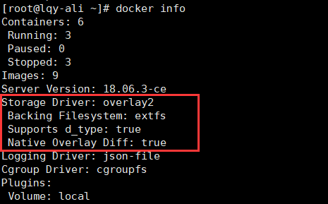

docker为容器提供了两种存放数据的资源
1.由storage drive管理的数据层（镜像层和容器层）
2.Data Volume
storage driver
特性
Copy-on-Write
1.新数据会直接存放在最上面的容器层
2.修改现有数据会先从镜像层将数据复制到容器层，修改后的数据直接保存在容器层中，镜像层保持不变
3.如果多个层中有命名相同的文件，用户只能看到最上层的文件
功能
实现了多层数据的堆叠并为用户提供了一个单一的合并之后的统一视图
Docker支持多种storage driver,有AUFS、Device Mapper、Btrfs、OverlayFS、VFS和ZFS
如何选择storage driver
优先使用Linux发行版默认的storage driver
查看linux环境默认的driver
docker info

driver使用Overlay2，底层文件系统extfs。
对于某些容器，直接将数据放在由storage driver维护的层中是最好的选择，比如那些无状态的应用。无状态意味着容器没有需要持久化的数据，随时可以从镜像直接创建
DataVolume
适用于持久化数据需求，容器启动时需要加载已有数据，容器销毁时希望保留产生的新数据，也就是说容器有状态。
本质
Docker Host文件系统中的目录或文件，能够直接被mount到容器的文件系统中
特点
1.Data Volume是目录或文件，而非没有格式化的磁盘（块设备）
2.容器可以读写volume中的数据
3.volume数据可以被永久地保存，即使使用它的容器已经销毁
现在我们有数据层（镜像层和容器层）和volume都可以用来存放数据。具体使用场景
1.Database软件 vs Database数据
2.Web 应用 vs 应用产生的日志
3.数据分析软件 vs input/output数据
4.Apache Server vs 静态HTML文件
前者放在数据层，因为无状态，可作为镜像一部分
后者需要持久化存储，与镜像分开，因此放在Data volume中
目前无法设置volume的容量（volume是docker host的一部分，容量取决于文件系统当前未使用的空间）volume类型
bind mount
将Host上已存在的目录或文件mount到容器
-v将其mount到httpd容器
-v格式
<host path>:<container path>
docker run -d -p 80:80 -v ~/htdocs:/usr/local/apache2/htdocs httpd
/usr/local/apache2/htdocs就是Apache Server存放静态文件的地方。由于路径已经存在，原有数据会被隐藏，替换成~/htdocs/中的数据。
bind mount可以让host与容器共享数据。 即使容器销毁了，bind mount依然存在。指定数据的读写权限
docker run -d -p 80:80 -v ~/htdocs:/usr/local/apache2/htdocs:ro httpd
默认可读可写。
ro设置只读权限，在容器中无法对bind mount数据进行修改，只有host有权修改
除了bind mount目录，可单独指定一个文件
将html文件加到apache中，同时保留了容器原有的数据
docker run -d -p 80:80 -v ~/htdocs/index.html:/usr/local/apache2/htdocs/new_index.html httpd
curl 127.0.0.1:80
curl 127.0.0.1:80/new_index.html
使用场景
只需要向容器添加文件，不希望覆盖整个目录。
注意：host中的源文件必须存在，不然当作一个新目录bind mount给容器 ***缺点*** bind mount需要指定host文件系统的特定路径，限制了容器可移植性 ## docker managed volume ***与前者最大的区别*** 不需要指定mount源，指明mount point即可。 通过-v告诉docker需要一个data volume,并将其Mount到/usr/local/apache2/htdocs. ``` docker run -d -p 80:80 -v /usr/local/apache2/htdocs httpd ``` 在容器的配置信息中可以找到data volume所在 ``` docker inspect image长ID ``` Source就是该volume在host上的目录原理
每当容器申请mount docker maneged volume时，docker都会在/var/lib/docker/volumes下生成一个目录，即mount源
如果mount point指向的是已有目录，原有数据会被复制到volume中。但此时该目录已经不再是由storage driver管理的层数据，而是data volumedocker volume
只能查看docker managed volume（目前不支持bind volume查看）
docker volume ls
docker volume inspect image长ID
docker inspect.....
可查看volume信息和容器
两者区别
| 不同点 | bind volume | docker managed volume |
|---|---|---|
| volume位置 | 可任意指定 | /var/lib/docker/volumes/... |
| 对已有mount point影响 | 隐藏并替换为volume | 原有数据复制到volume |
| 是否支持单文件 | 支持 | 不支持，只能目录 |
| 权限控制 | 可设置只读，默认读写 | 无控制，读写操作 |
| 移植性 | 弱，与host path绑定 | 强，无须指定host目录 |
数据共享（volume特性）
容器与host共享数据
bind mount:直接将要共享的目录mount到容器
docker managed volume：由于volume位于host中的目录，是在容器启动时才生成，所以需要将共享数据复制到volume中。
docker run -d -p 80:80 -v /usr/local/apache2/htdocs httpd
docker cp ~/htdocs/index.html image短ID:/usr/local/apache2/htdocs
docker cp 可以在容器和host之间复制数据
容器之间共享数据
将共享数据放在bind mount中，然后将其mount到多个容器。
1.将$HOME/htdocs mount到三个httpd容器
docker run --name webn -d -p 80 -v ~/htdocs:/usr/local/apache2/htdocs httpd2.查看当前主页
docker ps curl 127.0.0.1:3277n3.修改volume中的主页文件，再查看并确认所有容器都使用了新主页
echo "修改内容" > ~/htdocs/index.html curl 127.0.0.1:3277n另一种使用volume container
volume container
volume container是专门为其他容器提供volume的容器。提供的卷可以是bind mount，docker managed volume。创建volume container
docker create --name vc_data \
> -v ~/htdocs:/usr/local/apache2/htdocs \
> -v /other/useful/tools \
> busybox
分析
1.volume container的作用只是提供数据，它本身不需要处于运行状态，因此只执行docker create
2.容器mount两个volume:
bind mount，存放Web Server的静态文件
docker managed volume,存放一些实用工具
3.查看这两个volume
docker inspect vc_data
4.其他容器可以通过--volumes-from使用vc_data这个volume container
docker run --name webn -d -p 80 --volumes-from vc_data httpd
特点
1.与bind mount相比，不必为每一个容器指定host path，所有path都在volume container中定义好了，容器只需与volume container关联，实现了容器与host的解耦
2.使用volume mount的容器，其mount point是一致的，有利于配置的规范和标准化
data-packed volume container
将数据完全放到volume container中，同时又能与其他容器共享
原理
将数据打包到镜像中，通过docker managed volume共享
实例
1.Dockerfile构建镜像
FROM busybox:latest
ADD htdocs /usr/local/apache2/htdocs
VOLUME /usr/local/apache2/htdocs
ADD将静态文件添加到容器目录/usr/local/apache2/htdocs
VOLUME作用与-v等效，用来创建docker managed volume，mount point为/usr/local/apache2/htdocs，因为这个目录就是ADD添加的目录，所以会将已有数据复制到volume中。
2.build新镜像datapacked
docker build -t datapacked
3.用新镜像创建data-packed volume container
docker create --name vc_data datapacked
因为在Dockerfile中已经使用了VOLUME，此处无须指定volume的mount point
4.启动httpd容器并使用data-pack volume container
docker run -d -p 80:80 --volumes-from vc_data httpd
优点
容器可以正确读取volume中的数据，data-packed volume container是自包含的，不依赖host提供数据，具有强移植性
适用场景
只使用静态数据的场景，比如应用的配置信息、Web server的静态文件
Data Volume生产周期管理
备份
volume实际上是host文件系统中的目录和文件，所以volume的备份实际上是对文件系统的备份
之前的搭建本地Registry
docker run -d -p 5000:5000 -v /myregistry:/var/lib/registry registry:2
所有本地镜像都保存在host的/myregistry目录中，我们要做的就是定期备份这个目录。
恢复
如果数据损坏，直接用之前备份的数据复制到/myregistry即可
迁移
如果我们想使用更新版本的Registry，涉及数据迁移
1.docker stop当前Registry容器
2.启动新版本容器并mount原有volume
docker run -d -p 5000:5000 -v /myregistry:/var/lib/registry registry:latest
在启用新容器前要确保新版本的默认路径是否发生变化
销毁
可以删除不需要的volume，但删除后数据无法找回docker不会销毁bind mount，删除数据的工作只能由host负责。
docker managed volume在执行docker rm 删除容器时可以带上-v参数，docker会将容器使用到的volume一并删除，但前提是没有其他容器mount该volume.目的是保护数据，非常合理。
如果删除容器没带-v，会产生孤儿volume。可通过docker提供的volume子命令对docker managed volume进行维护如下:
docker volume ls
docker run --name bbox -v /test/data busybox
忘记带-v
docker rm bbox
docker volume ls
删除单个volume
docker volume rm volume_name
批量删除
docker volume rm $(docker volume ls -q)